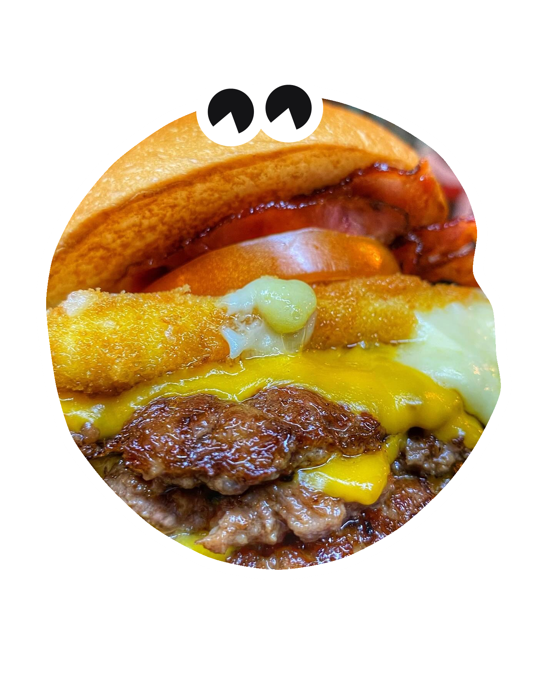
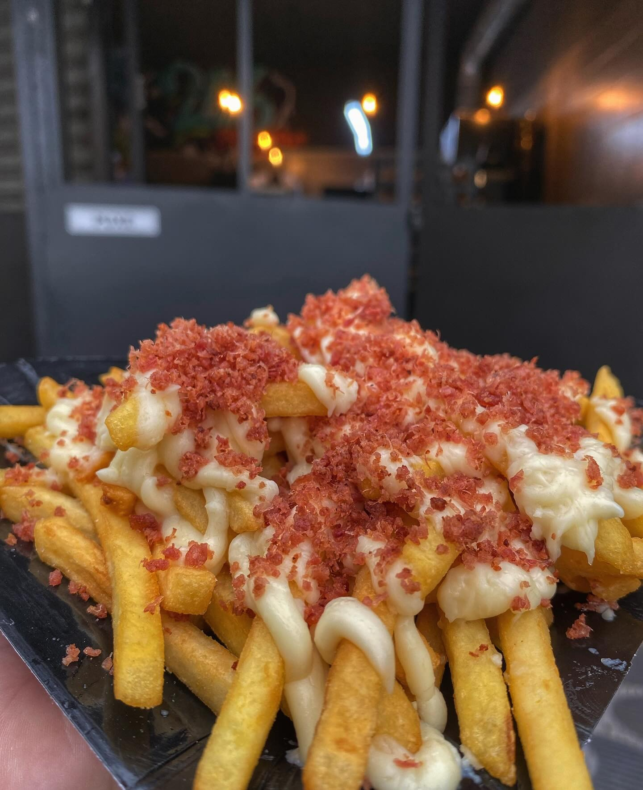
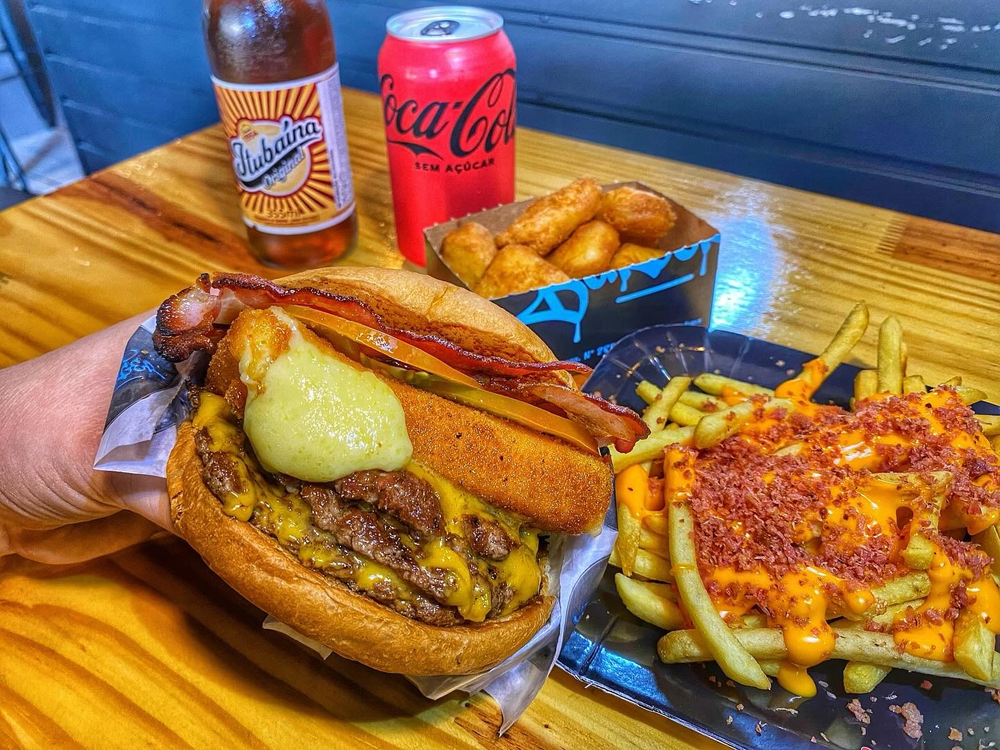
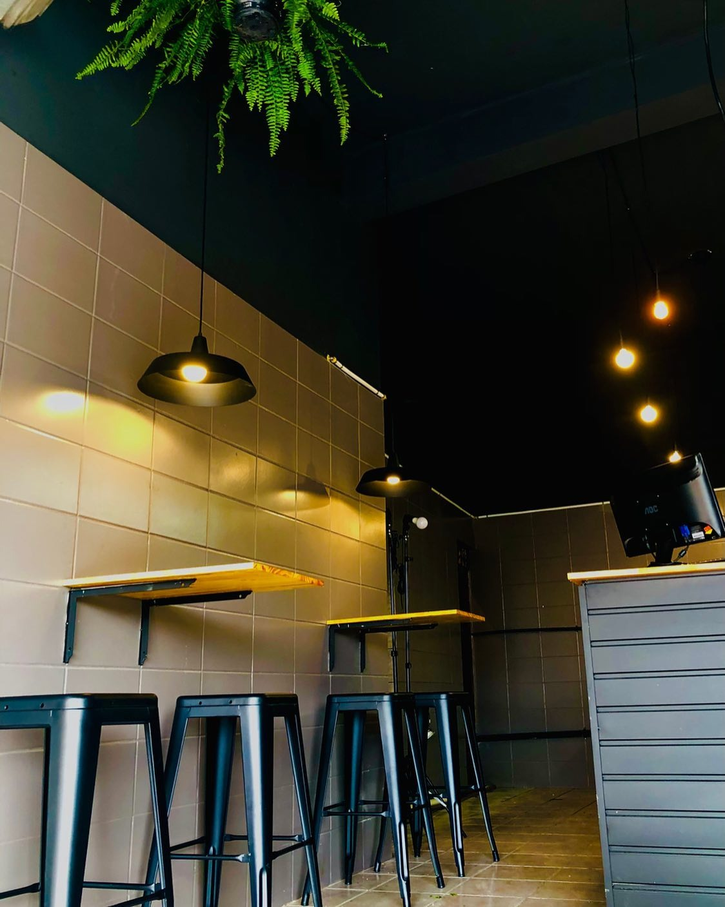
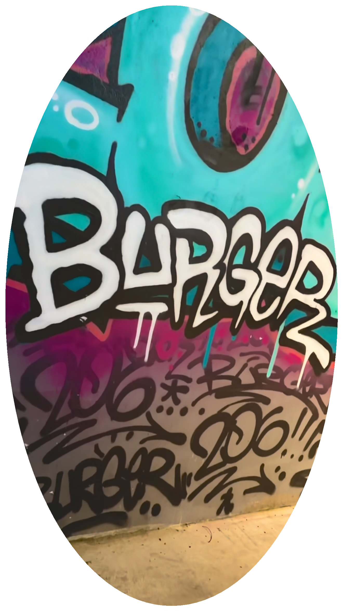
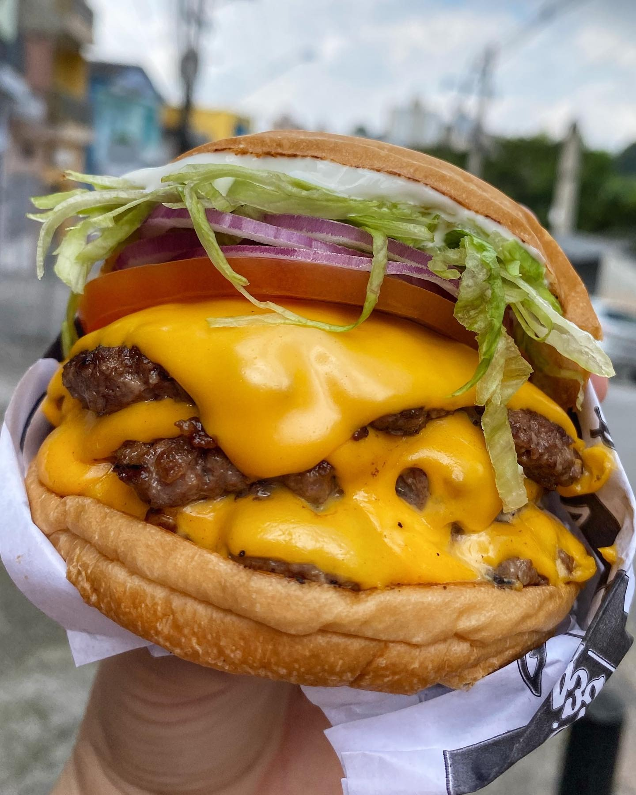
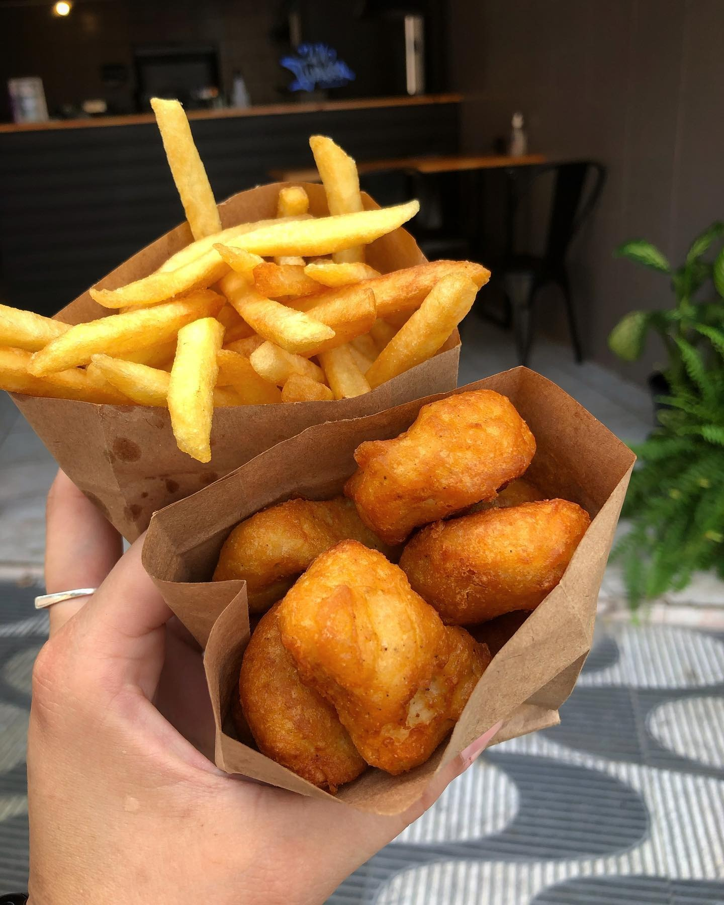
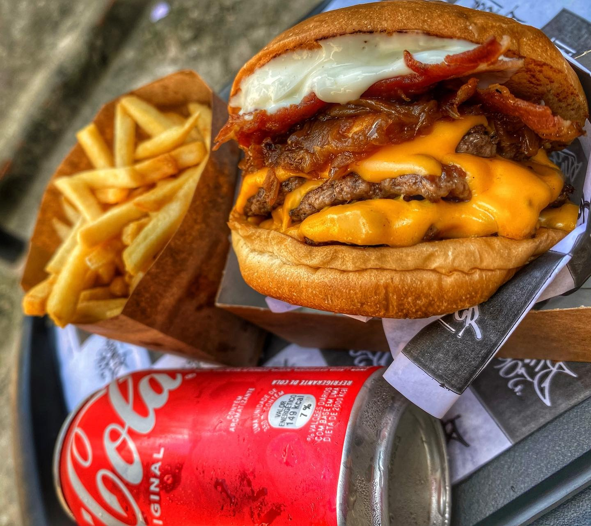
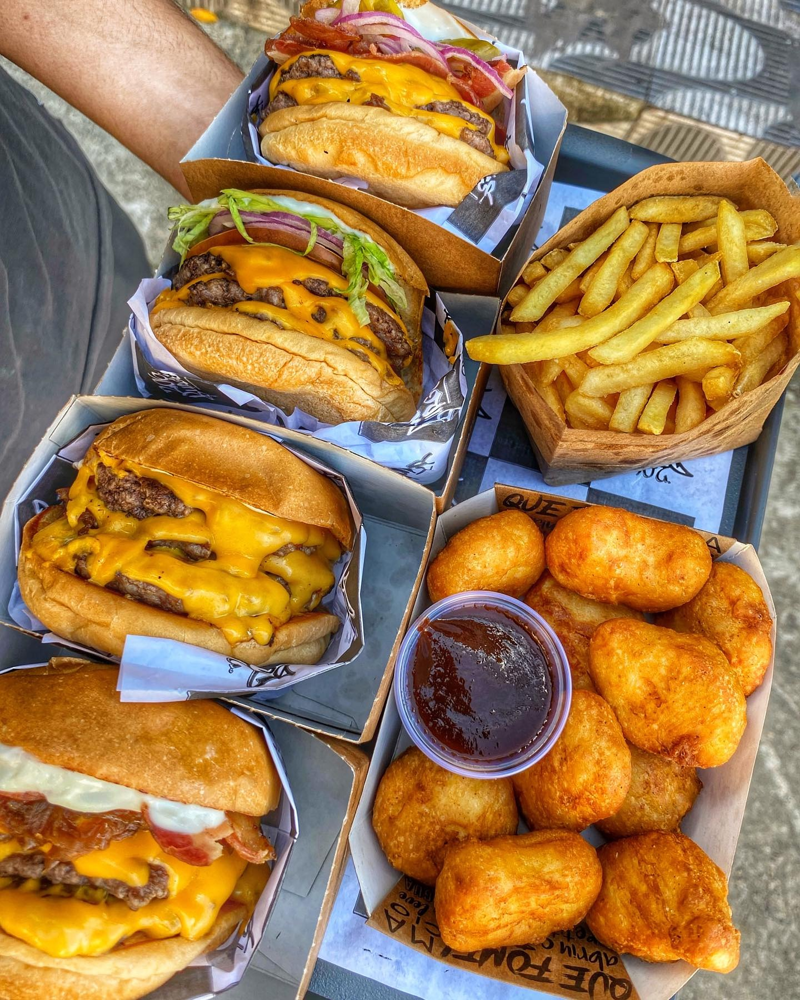

SMASHED
FRESH
THE BURGER
FEITO EM
DIADEMA

206
Prensado na chapa ultra quente: blend 100% bovino selado para criar a crosta caramelizada perfeita e reter toda a suculência.
Cheddar cremoso abundante, queijo empanado crocante e maionese da casa. O hambúrguer de conforto oficial de Diadema.
SUCULÊNCIA · CROSTA · QUEIJO
Eleito Super Restaurante iFood por 12 meses consecutivos. Do smash duplo clássico ao especial com disco de queijo empanado crocante, feito artesanalmente no Centro de Diadema.

Batata frita com cheddar cremoso abundante e bacon crocante.

Disco artesanal de queijo empanado crocante derretendo por dentro.

Ambiente descontraído e aconchegante no coração de Diadema.
SABOR DE VERDADE · CULTURA DE RUA
SUPER RESTAURANTE
Reconhecimento oficial de 12 meses consecutivos pelo iFood pela excelência em tempo de entrega, padrão de temperatura e satisfação do cliente.

CROSTA & SUCO
Prensagem smash técnica na chapa em altíssima temperatura. Reação de Maillard profunda que cria uma crosta irresistível sem ressecar o interior.

O VERDADEIRO SMASH DO ABC
CADA CAMADA TEM UMA HISTÓRIA
Pão Brioche Tostado
Macio, amanteigado e selado na chapa com manteiga para criar uma barreira térmica perfeita que segura os molhos sem umedecer a massa.
Queijo Empanado
Exclusividade artesanal da casa: disco espesso empanado na farinha crocante, dourado na hora com interior super cremoso e elástico.
Duplo Smash 100%
Cortes bovinos selecionados, prensados com espátula pesada na chapa a mais de 200°C para formar a crosta caramelizada perfeita.
Cheddar & Molhos
Cheddar fundido farto e maionese verde artesanal temperada com ervas frescas. O equilíbrio perfeito de acidez, cremosidade e sabor.
DO CENTRO DE DIADEMA ATÉ A SUA MESA

Seu pedido chega crocante, aquecido e impecável.

Smash burger, porção de batatas e molho da casa.
SINTA O VERDADEIRO SABOR DE DIADEMA
Estamos prontos para preparar o seu smash na chapa agora. Peça pelo delivery ou retire quentinho no balcão da Av. Sete de Setembro.
